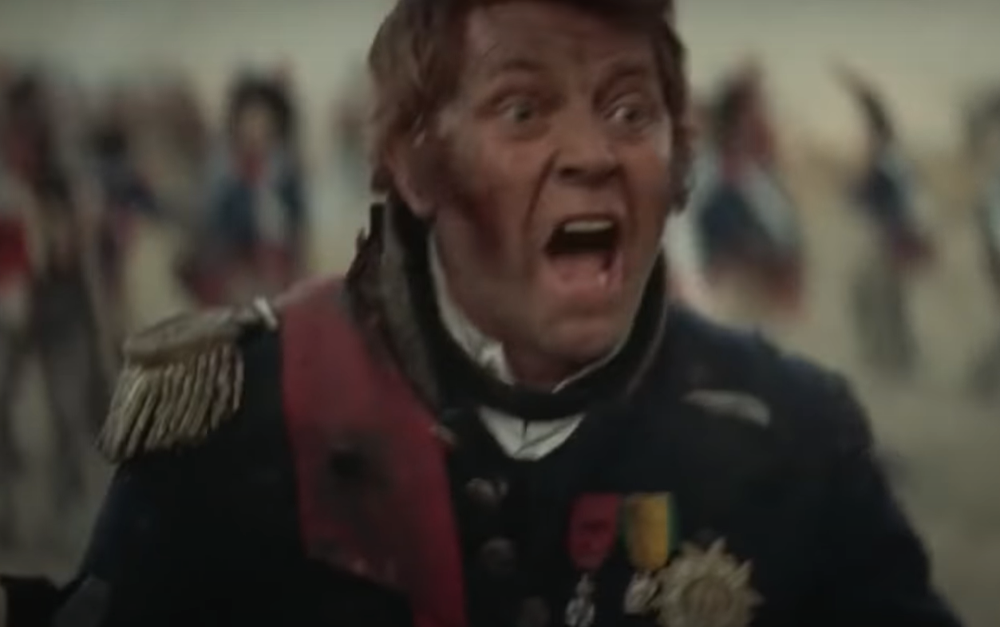
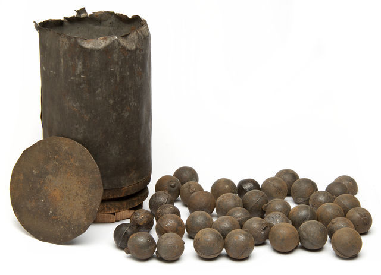
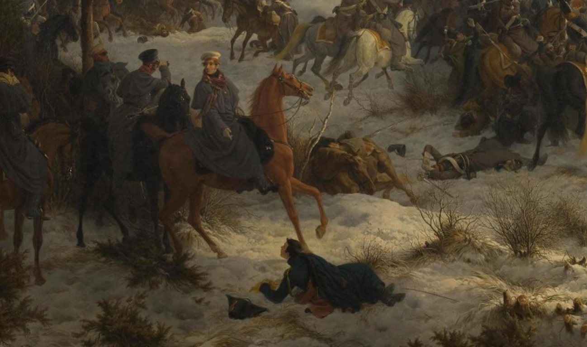
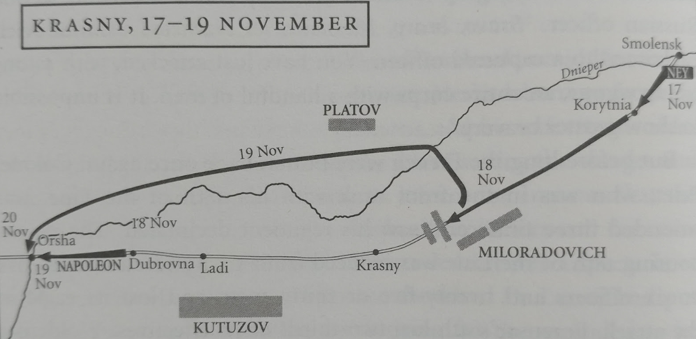
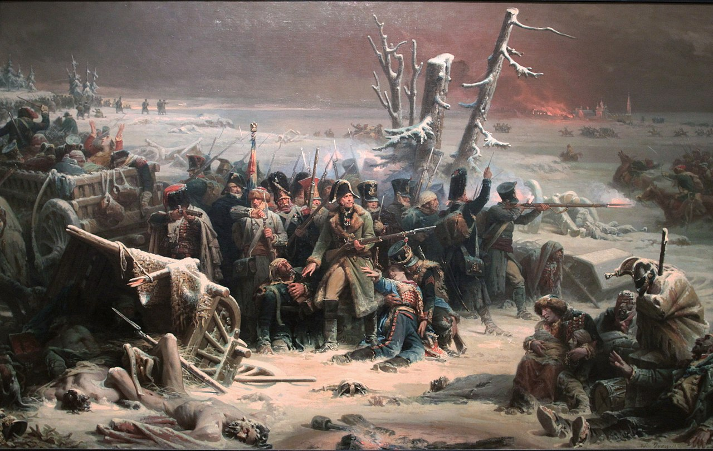
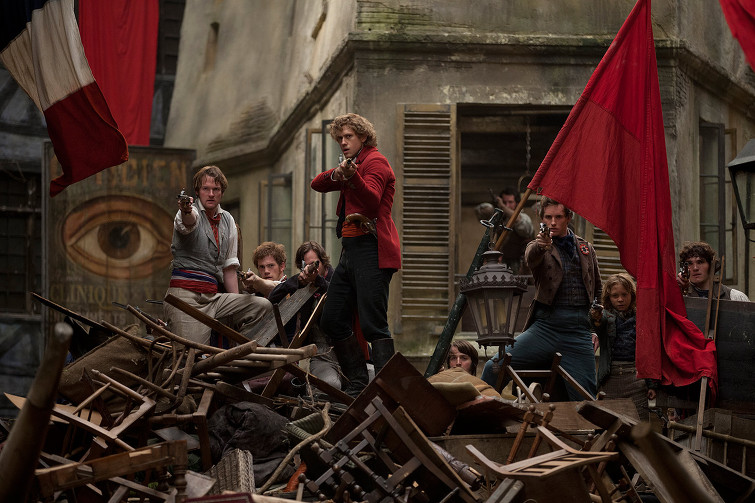
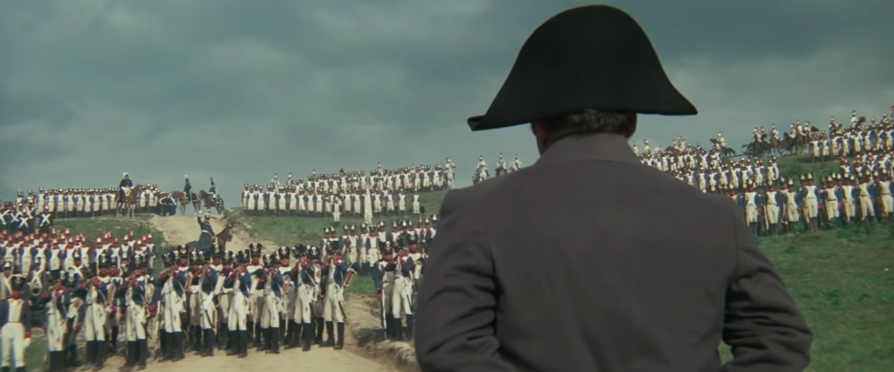

나는 네(Ney), 프랑스의 원수다 ! - 크라스니(Krasny) 전투 (3)
게시: 2021-08-23T06:30:45+09:00
나폴레옹이 다부와 합류하여 크라스니를 떠나던 11월 17일, 네는 받은 명령대로 스몰렌스크의 성채를 폭파하고 스몰렌스크를 떠나고 있었습니다. 많은 부상병들을 스몰렌스크의 병원에 버려둔 채 떠나야 했으므로 결코 기분 좋은 출발은 아니었습니다. 네의 제3군단은 고작 6천 수준으로 줄어들어 있었는데, 스몰렌스크를 나서고 보니 그 뒤로는 1만이 훌쩍 넘어보이는 많은 낙오병들과 민간인들이 따라오고 있었습니다. 다음 날인 11월 8일 오전, 길을 걷다보니 최근에 전투가 벌어졌던 것이 분명한 흔적들이 도로 주변에 널려있었습니다. 오후가 되어 크라스니 근처에 도착하자, 아까의 흔적에서 짐작했듯이 러시아군이 길을 막고 도열해 있었습니다. 밀로라도비치가 이끄는 약 1만6천의 병력이었습니다. 밀로라도비치로서도 이번 싸움에서는 반드시 네를 생포해야 했습니다. 쿠투조프가 아무리 나폴레옹과의 정면 대결을 피한다고 해도, 그도 계속 짜르에게 보고를 해야 하는 입장에서 최소한 나폴레옹의 직속 부하 원수 하나 정도는 생포해서 상트 페체르부르그로 보내야 했기 때문입니다. 외젠을 손가락 사이로 놓치고, 다부는 나폴레옹이 직접 나서서 구해가는 바람에 다 놓쳤다면, 이제 마지막 후위 부대를 맡은 네는 반드시 생포해서 알렉산드르 앞에 데리고 가야 했습니다. 이런 사정이 있었기에 이번에도 밀로라도비치는 사자를 먼저 보냈고, 백기를 든 러시아 장교가 말을 달려와 네에게 유창한 프랑스어로 안부를 물으며 항복을 권유했습니다. 그에 대해 네는 시원시원하게 답변했습니다. "Un maréchal de France ne se rend jamais!" (프랑스의 원수는 절대 항복하지 않는다!)

(이건 1970년 영화 Waterloo에서 묘사된 네 원수입니다. 전투 막판에 프랑스군이 패주하자 병사들을 돌려세우며 'Don't you know me? I am Ney, Marshal of France!' 라고 외치는 장면입니다.) 그는 자신의 병력보다 거의 3배는 되어 보이는 러시아군에게 전혀 기가 죽지 않고 고작 6문 남은 야포를 방열한 뒤 오히려 공격에 나섰습니다. 프랑스군이 어떻게 나올지 상황을 살피던 러시아군은 흠칫 놀랐습니다만, 수적인 차이가 워낙 커서 이미 결과는 뻔한 싸움이었으므로 당황하지 않고 응전했습니다. 러시아군은 숫자도 많았지만 무엇보다 포병 전력 면에서 압도적이었습니다. 특히 온 벌판이 깊은 눈으로 덮혀 있어서 보병들의 신속한 진격이 어려울 때 원거리에서 포격을 가하는 재미는 매우 쏠쏠했습니다. 나폴레옹의 근위대를 상대할 때도 감히 근접전을 펼치지는 못했으나 원거리에서 맹포격을 퍼부어 크라스니에 후위대로 남았던 신참 근위대를 거의 궤멸시킨 바 있을 정도였지요. 그러나 네의 공격은 그 규모에 비해 아주 맹렬했습니다. 특히 전투가 도로를 끼고 진행되는 것이고 이미 외젠과 다부의 부대가 밟아 다져놓은 눈밭이다보니 프랑스 보병들의 진격도 꽤 속도감이 있었습니다. 네의 프랑스 제3군단은 대포알을 뒤집어 쓰면서도 꿋꿋하게 진격해와서 거의 러시아 포병대를 제압하기 일보 직전까지 갔습니다. 그러나 딱 거기까지였습니다. 역시 뼈와 살로 된 인간의 벽은 결코 납과 화염을 버티어 낼 수 없었습니다. 근거리까지 다가온 프랑스군에게 러시아 포병대는 준비해둔 캐니스터 탄(canister shot)을 쏘아붙였고, 이 거대한 산탄총의 일제 포격을 받은 프랑스군은 대오 전체가 한꺼번에 쓰러지며 무너져 내렸습니다. 게다가 러시아군 보병과 함께 기병대가 뛰어나와 피범벅 속에서 우왕좌왕하는 프랑스군에게 머스켓 소총을 퍼붓고 총검과 군도로 연장질을 해대자 프랑스군은 버티지 못하고 물러서야 했습니다. 그러나 전장에서 항상 있는 그 정도의 난관에 굴할 네가 아니었습니다. 그는 전혀 머뭇거리지 않고 병사들을 재규합하여 재차 정면 돌파에 나섰습니다. 하지만 역시 결과는 마찬가지였습니다. 두번째 공격도 캐니스터 탄의 일제 세례와 압도적인 수적 열세에 참혹하게 무너졌습니다.

(캐니스터 탄입니다. 양철로 만든 깡통 속에 작은 소총탄이나 쇳조각, 못, 심지어 돌조각 등을 넣어서 쏘는 것입니다. 요즘의 산탄총을 거대하게 만들어 놓은 것이라고 보시면 됩니다. 적의 보병대가 근거리까지 접근하면 포병대는 구형탄(roundshot)을 이렇게 캐니스터 탄으로 바꾸어 쏘았습니다.) 무모할 정도로 용감한 네의 공격에는 러시아군도 깊은 인상을 받았습니다. 당시 러시아군 측에 옵저버로 있던 영국군 윌슨 장군은 '마치 거인들의 싸움을 보는 듯 했다'라고 적었고, 밀로라도비치도 전투 중 포로로 잡혀온 어떤 프랑스 장교에게 이렇게 외치며 1/3 정도의 병력으로 과감히 공격하는 프랑스군의 용기를 찬양했습니다. "Bravo, bravo, Messieurs les Francais." (브라보, 브라보, 프랑스군 여러분)

(지난 편에도 나왔던 크라스니 전투를 그린 헤스(Peter von Hess)의 그림 중 좌측 하단의 밀로라도비치를 확대한 것입니다. 쓰러진 프랑스 장교를 도와주라는 지시를 내리고 있습니다. 적어도 장교들끼리는 동업자 정신을 가지고 포로에 대해서 자비심을 베푸는 경우가 많았고, 그런 정신은 제1차 세계대전 때까지도 그대로 이어졌습니다.) 하지만 결국 프랑스군은 패퇴하여 물렀습니다. 피해도 극심했습니다. 펠레(Pelet) 대령의 제48연대는 사실상 궤멸되었고 펠레 대령 본인도 세번이나 부상을 입었습니다. 제18연대는 장교 5명에 사병 30명만 두 발로 서있을 수 있었습니다. 페젠삭(Fezensac) 대령의 제4연대는 병력의 2/3를 잃었습니다. 스몰렌스크를 떠났던 6천 중에 이제 남은 병력은 2천 정도에 불과했습니다. 만약 전투가 오후 늦게 시작되어 해가 오래 떠있었다면 제3군단은 전멸했을 것입니다. 해가 저물어 그 날 전투가 종료되자, 현장에서 전황을 살피던 쿠투조프의 참모 뢰벤슈테른(Woldemar von Lowenstern)은 쿠투조프에게 돌아가 '내일이면 네를 포로로 잡을 수 있겠습니다'라고 보고했습니다. 이렇게 무모한 공격이 무슨 의미가 있었을까요? 그냥 차라리 항복하는 것이 부하들의 생명을 보존하는데 도움이 되지 않았을까요? 네는 나름대로 생각이 있었습니다. 러시아군과 크게 전투를 벌여 포성과 총성을 울리며 난리가 벌어지면 바로 지척인 크라스니의 나폴레옹이 자신을 도우러 근위대를 이끌고 나올 것이라는 계산이었습니다. 그러나 네도 나폴레옹이 이미 떠나버린 뒤라는 것을 알게 되자 별명이 Le Rougeaud ('(ㅎ)루조', 얼굴이 시뻘건 사람)였던 네는 그 별명에 어울리게 노발대발 폭발하여 자신들을 버린 것에 대해 나폴레옹에게 쌍욕을 늘어놓았다고 합니다. 그러나 네가 그저 용감무쌍하고 쌍욕만 찰지게 하는 것으로 원수의 직위에 오르고 엘힝겐 공작(Duc d'Elchingen) 자리에 오른 것은 아니었습니다. 화가 가라앉자 그는 부하들을 불러모으고 현 상황을 어떻게 타개할 것인지 의논했습니다. 사실 방법이 많지 않았습니다. 네는 유일한 방법을 택합니다. 바로 야음을 틈타 전면의 러시아군을 우회하여 빠져나가는 것이었습니다. 외젠이 썼던 것과 동일한 방법이었지요. 그러나 외젠과는 다르게 네는 당연히 러시아군 측면에도 경계망이 깔려 있을 것이라고 생각했고, 따라서 성공적으로 우회하려면 아예 드네프르 강을 건너 북쪽 벌판을 가로질러야 한다고 판단했습니다. 이 계획을 실행에 옮기는데 있어 네는 확실히 말단 병사부터 시작하여 부사관을 지나 하급 장교를 거쳐 실력으로 장군이 된 것이 무엇을 뜻하는지를 보여주었습니다. 그는 야간에 부대를 이동시키는 것이 얼마나 어려운 일인지, 특히 어둠 속에서 얼마나 쉽게 길을 잃는지 잘 알고 있었습니다. 그는 먼저 현지 지리에 밝은 폴란드 장교 1명을 파견하여 어느 지점에서 강을 건너는 것이 좋을지 정찰하게 하고, 그 장교가 돌아와 보고하자 숙영지의 모닥불을 충분히 많이 피워 프랑스군이 그 날 밤 거기서 숙영한다는 것을 온 동네가 확신하도록 만들었습니다. 그러고 난 뒤에야 남은 2천의 병력과 대포, 짐마차 등을 수습하여 슬그머니 북쪽 숲 속으로 사라졌습니다.

(Adam Zamoyski의 책에 나오는 네의 탈출로입니다.) 그럼에도 불구하고 어둠 속의 탈출은 확실히 변수도 많고 혼란스러웠습니다. 무엇보다 낮에 참혹한 전투를 겪은 병사들의 심리는 불안 그 자체였지요. 그러나 병사들은 붉은 머리 네 원수가 자신들과 함께 이 눈길 속을 헤매고 있다는 사실에 안심을 할 수 있었습니다. 비록 상황이 어렵지만 네 원수가 어떻게든 돌파구를 마련해줄 것이라는 믿음이 있었던 것입니다. 지휘력이라는 것이 바로 그런 것이지요. 이건 따로 방법이 있는 것이 아니라 다년간의 행동으로 쌓을 수 밖에 없는 신뢰에서 나오는 것이니까요. 야간 행군이 어렵다고 하더니 아니나 다를까, 숲 속에서 곧 프랑스군은 길을 잃고 말았습니다. 그러나 네는 그런 와중에도 당황하지 않고 원래 시냇물이 흐를 것 같은 움푹 꺼진 고랑 같은 지형을 찾아내고는 그 바닥의 눈을 파게 했습니다. 눈을 파자 정말 얼음이 드러났는데, 네는 얼음을 깨어 그 밑의 냇물 흐름을 보고 어느 쪽이 드네프르 강으로 향하는 방향인지 파악을 했습니다. 그렇게 드네프르 강까지 간 뒤, 아슬아슬하게 건널 정도로 얼어붙은 드네프르 강 위를 전군이 조금씩 나누어 걸어서 건넜습니다. 일부는 가벼운 짐마차를 끌고 얼음 위에 서기도 했으나, 결국 일부 지점에서는 얼음이 깨지고 마차와 병사들이 강물 속에 빠지기도 했습니다. 결국 모든 대포와 짐마차는 강변 남쪽에 버려둔 채 제3군단의 남은 병력은 무사히 강을 건널 수 있었습니다.

(크라스니 전투에서 네는 원수의 몸으로 직접 머스켓 소총을 쥐고 병사들 틈에서 싸웠다고 합니다. 병사들의 신뢰는 이런 행동을 통해서 얻어지는 것입니다. 이 그림은 Adolphe Yvon의 작품인데, 아마 드네프르 강을 건널 때의 모습인 모양이네요. 실제로는 야간에 강을 건널 때는 저런 전투는 없었습니다.) 이후로도 제3군단의 탈출은 쉽지 않았습니다. 이들은 뒤를 쫓는 플라토프(Platov)의 코삭 부대에게 따라잡혀 숲 속으로 달려들어가 숨은 뒤 야간에야 다시 길을 떠나기도 했고, 그 이후에도 끈질기게 따라 붙는 무릎까지 빠지는 눈길 속에서 아무 저항을 못하고 속수무책으로 코삭 기마 포병대의 포격에 시달려야 했습니다. 이런 모든 어려움을 함께 한 네는 부하들에게 '이 모든 것을 겪고 살아남은 너희들은 그야말로 철사줄에 매달린 불x을 가졌다고 할 수 있을 거야'라고 칭찬인지 욕인지 헷갈리는 상소리를 하기도 했답니다. 이렇게 어둠 속에 드네프르 강을 건넌지 이틀째 되던 날 밤, 다시 어둠 속에서 길을 잃고 헤매던 제3군단의 선발 부대는 전방에서 누군가 '누구냐'라고 날카로운 목소리로 수하를 거는 것을 듣고 기쁨에 날아갈 것 같았습니다. 그 '누구냐'라는 말이 프랑스어 'Qui vive?' (직역하면 'Who lives?' 즉 '누가 사느냐'이지만, 어감을 살리면 'Who goes there?' 정도가 되겠습니다)로 나왔기 때문이었습니다. 이들은 대답으로 일제히 'France!' 라고 외쳤다고 합니다.

(빅토르 위고의 레미제라블의 바리케이드 장면에서도 그런 장면이 나옵니다. 바리케이드 앞에 도열한 정부군 부대가 바리케이드를 향해 'Qui vive?'를 외치자 바리케이드를 지키던 앙졸라가 'Révolution!' (혁명이다!) 라고 대답합니다.) 네의 귀환은 프랑스군 아무도 예상하지 못했던 기적같은 일이었습니다. 'Qui vive'를 외쳤던 부대는 외젠의 제4군단 소속이었으므로 외젠에게 그 소식이 먼저 전달되었고, 외젠은 너무나 기뻐 직접 현장까지 달려나와 네를 껴앉고 기뻐했다고 합니다. 아직 고향까지 갈 길이 먼 그랑다르메였지만, 그 날 밤만큼은 이 작은 기적으로 인해 나폴레옹부터 말단 사병까지 모두가 기뻤습니다.

(네의 기적 같은 귀환에는 가식적인 나폴레옹도 정말 기뻐했다고 전해집니다. 이때의 감격적인 기억은 네에게도 꽤 깊이 각인되었었나 봅니다. 1815년 엘바 섬에서 나폴레옹이 탈출하여 프랑스에 상륙한 뒤, 나폴레옹을 잡아오겠다고 네가 출동했다는 이야기를 듣자 나폴레옹은 '난 크라스니에서 탈출할 때처럼 네를 맞이하겠어'라고 했다지요. 다만 실제로 1812년 11월 나폴레옹은 크라스니에서 극적으로 탈출한 네를 직접 만나지는 못했었습니다. 사진은 역시 1970년 영화 Waterloo 속 장면인데. Lons-le-Saunier에서 네의 체포조를 맞이하는 나폴레옹의 뒷모습입니다.)
하지만 물론, 기쁨은 잠시였고 곧 냉엄한 현실은 거기 그대로 있었습니다. Source : 1812 Napoleon's Fatal March on Moscow by Adam Zamoyski
https://en.wikipedia.org/wiki/Battle_of_Krasnoi https://en.wikipedia.org/wiki/Michel_Ney